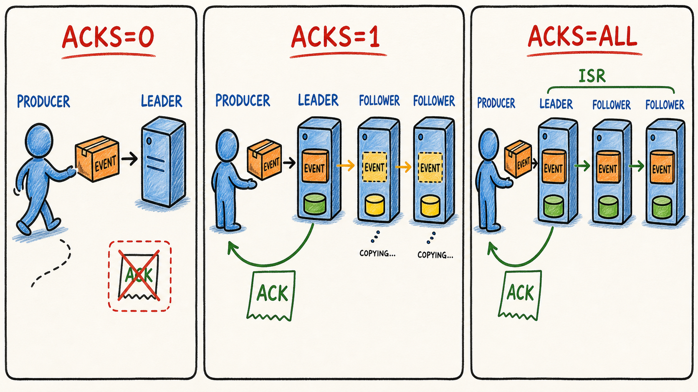

Acknowledgement
Phân biệt chính xác acks=0, 1 và all.
Kết nối acks, replication, ISR, retry, timeout và idempotence thành một quyết định có thể kiểm chứng—rồi áp dụng với KafkaTemplate trên cụm ba broker.
Phân biệt chính xác acks=0, 1 và all.
Tính được khi nào write bị từ chối bởi min.insync.replicas.
Giải thích duplicate và ordering risk khi retry xảy ra.
Nêu đúng phạm vi bảo vệ và những gì nó không bảo vệ.

acks=all, tập replica phải chờ là ISR hiện tại và write còn phải thỏa min.insync.replicas.| Mode | Producer đợi gì? | Điểm mạnh | Rủi ro |
|---|---|---|---|
acks=0 | Không đợi broker response. | Độ trễ phía producer thấp. | Không biết broker có append hay không; durability yếu nhất. |
acks=1 | Leader append rồi trả ACK. | Cân bằng latency/durability trong một số use case. | Leader có thể chết trước khi follower copy xong. |
acks=all | Leader chờ tất cả ISR hiện tại xác nhận. | Durability mạnh nhất trong các mode ACK. | Có thể từ chối write nếu ISR dưới ngưỡng; latency cao hơn. |
acks=all; topic/broker chọn min.insync.replicas. Một phía không thay thế phía kia.Topology: replication factor 3, B1 là leader. Mỗi lần thay cấu hình, hãy dự đoán kết quả trước khi nhấn gửi.
Topology đang khỏe: 3 ISR, min ISR = 2, acks = all.
acks=all, min ISR 2 → write vẫn có thể thành công khi ISR ổn định còn 2.acks=all.Kịch bản: broker đã append E1 nhưng ACK bị mất trên mạng. Producer không biết kết quả và retry cùng batch.
E1 · sequence 0
Sẵn sàng gửi.
Chọn mode rồi quan sát lần gửi lại.
delivery.timeout.ms bao toàn bộ hành trình sendĐiều chỉnh để thấy request timeout chỉ là một phần; retry/backoff phải nằm trong tổng delivery budget.
delivery.timeout.ms. Theo tài liệu hiện hành, thường nên để retries unset và điều khiển bằng delivery timeout.Bài này nối đúng phần Java hiện tại: enum, constructor validation, record và decision table. Chưa thêm Kafka dependency.
Project: senior-java-spring-mentor/practice-project
src/main/java/com/dream/learning/kafka/producer.
AcksMode { NONE, LEADER, ALL } và SendDecision { NO_ACK_EXPECTED, ACCEPTED, RETRY_OR_TIMEOUT, REJECTED_NOT_ENOUGH_ISR }.
Dùng record hoặc final class. Invariant: replication factor ≥ 1; min ISR nằm trong 1..replication factor; idempotence yêu cầu ALL và max-in-flight ≤ 5.
public record ProducerReliabilityPolicy(
AcksMode acks,
int replicationFactor,
int minInSyncReplicas,
boolean idempotence,
int maxInFlight) {
public ProducerReliabilityPolicy {
// TODO: validate null và các khoảng số
// TODO: validate ràng buộc idempotence
}
public SendDecision evaluate(
boolean leaderAvailable,
int inSyncReplicaCount) {
// TODO: decision table theo acks + ISR
throw new UnsupportedOperationException("learner implementation");
}
}Ít nhất 9 dòng: 3 mode acks × cluster khỏe / thiếu ISR / mất leader.
In input, decision và lý do. So sánh kết quả với mô phỏng trên trang.
Viết 5–7 câu: vì sao policy có durability cao hơn có thể giảm availability của write khi broker lỗi?
Tiếp tục project lab Spring Kafka riêng. Không sửa project Java nền tảng thành Spring Boot.
Khởi động ba broker và dùng CLI kiểm tra broker/topic. Đừng bắt đầu thí nghiệm khi cluster chưa ổn định.
orders.reliable.v1, partitions 3, replication factor 3, min.insync.replicas=2. Có thể tạo bằng NewTopic và config map hoặc CLI.
// TODO: @Bean NewTopic
TopicBuilder.name("orders.reliable.v1")
.partitions(3)
.replicas(3)
// TODO: config min.insync.replicas = 2
.build();Viết rõ để học, dù một số giá trị đang là default. Không đặt retries tùy tiện; dùng delivery timeout làm ngân sách.
spring:
kafka:
bootstrap-servers: localhost:9092,localhost:9094,localhost:9096
producer:
acks: all
properties:
enable.idempotence: true
max.in.flight.requests.per.connection: 5
delivery.timeout.ms: 30000
request.timeout.ms: 10000Dùng CompletableFuture. Log success gồm topic, partition, offset; log failure gồm exception gốc và event ID.
kafkaTemplate.send(topic, event.orderId(), event)
.whenComplete((result, error) -> {
if (error == null) {
// TODO: log partition + offset
} else {
// TODO: log eventId + root cause
}
});Gửi 10 event. Lưu log metadata và mô tả topic để biết leader/replicas/ISR của từng partition.
kafka-topics --bootstrap-server localhost:9092 \
--describe --topic orders.reliable.v1Chọn follower dựa trên output describe, không đoán. Chờ ISR phản ánh còn 2 rồi gửi tiếp. Dự đoán: acks=all + min ISR 2 vẫn cho phép write.
Giữ leader sống nhưng làm ISR của partition thử nghiệm còn 1. Gửi event và quan sát future fail/retry cho tới delivery timeout hoặc lỗi không retry được.
Khôi phục cluster, sau đó dừng leader. Quan sát election, metadata refresh và send latency. Không trộn case này với test min ISR.
acks=1 trong labChỉ đổi tạm ở môi trường học. Nêu vì sao future có thể success khi chỉ leader append, nhưng đây chưa phải bằng chứng event đã replicated an toàn.
Bật lại broker, chờ ISR đầy đủ, trả producer về acks=all. Lưu bảng kết quả trước/sau.
Success/failure xảy ra sau bao lâu? Root cause nào xuất hiện?
ISR thật có đúng như số container đang chạy không?
Leader election và retry làm send completion chậm thế nào?
acks=all có nghĩa mọi replica trong replication factor luôn phải ACK không?min.insync.replicas để write được chấp nhận.acks=all có thể success không?send() hai lần với cùng business event không?Giải thích RF=3, min ISR=2, acks=all; một follower chết; sau đó follower thứ hai chết. Future của KafkaTemplate thay đổi thế nào và vì sao?
acks, idempotence, retries, delivery timeout và max-in-flight.min.insync.replicas và durability.KafkaTemplate, CompletableFuture và metadata callback.spring.kafka.*.